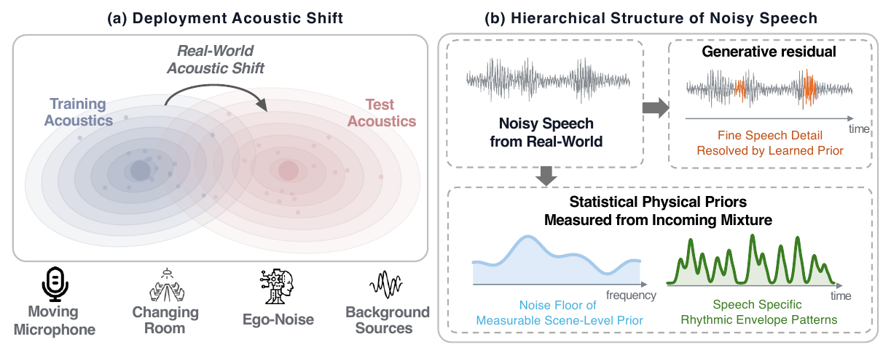
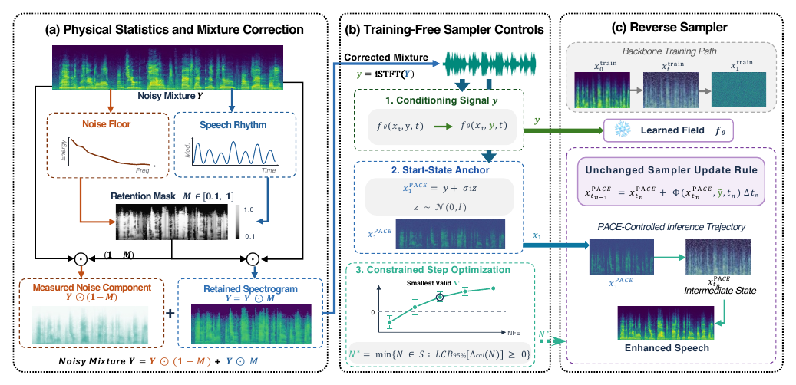
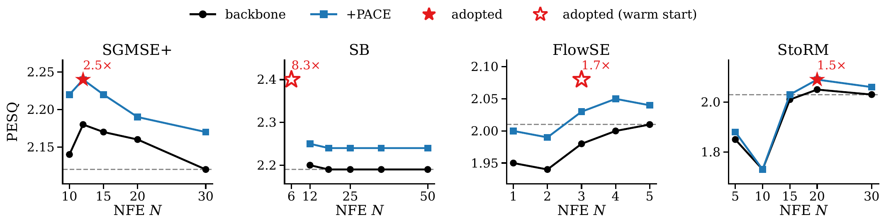
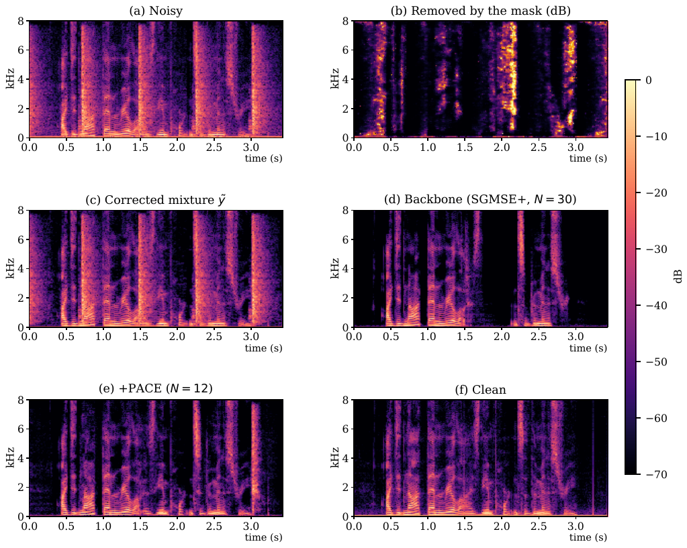

Across four frozen backbones (SGMSE+, SB, FlowSE, StoRM) and five benchmarks, every adopted +PACE operating point runs below the backbone default NFE, with speedups from 1.25× to 8.3×, 15 of 20 cells significantly above the backbone grid best and one disclosed loss of 0.02 PESQ.


Fifteen utterances, three per benchmark. Each card plays the noisy input, the frozen backbone at its default NFE, the same backbone with +PACE at a reduced NFE, and the clean reference. Examples are selected where +PACE improves both PESQ against the clean reference and non intrusive perceptual scores (UTMOS, DNSMOS OVRL) over the backbone. Starting a clip pauses the others. Clips are 16 kHz mono.
The corpus every backbone was trained on.
The album was widely expected to be a commercial disaster.
To do so, he reckons that a good opening result is essential.
You can see it on the training ground and around the hotel.
Unseen recordings, familiar noise types.
in the audience and make guilty faces? He may try to phone us. Here's where luck would normally step in. Within this framework, what followed was strained. Even macabre.
The National Historical Survey found seismic activity. Corey attacked the project with extra determination. You always come up with pathological examples. Put the butcher block table in the garage.
had a tiny envelope tied to its wrist. Diversity of perception, yes. Diversity of fact, yes. To some extent, predispositions.
Noise classes the training corpus never contained.
Thus, it is that the honor of three is saved, our country, our masters, and our own.
She poured into the dish a quantity from each of these bottles.
A voice from beyond the world was calling.
Expressive and emotional speaking styles.
I'm sorry I did that to you. I really didn't mean to hurt you. I feel horrible that that happened to you.
Since then, physicists have found that it is not reflection, but refraction by the raindrops which causes the rainbows. Many complicated ideas about the rainbow have been formed.
That wall in the living room is white. There is one more piece of bread in the pantry. This door closes at 8 p.m. tonight.
Real microphone and room conditions.
I will not stay here. God, we simply must trust the character. Stay, stay, I will go myself. May one ask what it is for? He rushed to the window and opened the movable pane.
I'm just sitting here looking at the sunset. This is the most peaceful place that I have been to in a long time. It's the air, the cool air, and the sunset, and the sun.
Okay. I usually go to bed around 7.30 or so. I take my clothes and I get a bath and then I come back and I read a book and then I go to sleep.
Three of the utterances above, played back in a real room and captured by the raw front microphone of an Ameca humanoid head while the head was in motion. The clips document the deployment capture chain, real room acoustics, servo and fan noise of the moving head, with no studio processing. For two utterances the +PACE output on this real channel is included, with reference free DNSMOS overall scores on each clip. Quantitative evaluation on this recording channel is outside the scope of the paper.
@inproceedings{anonymous2027pace,
title = {PACE: Physical Priors as Adaptive Control for Frozen Diffusion Speech Enhancement},
author = {Anonymous},
booktitle = {Under review},
year = {2027}
}